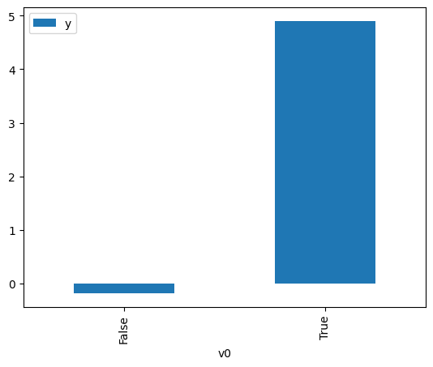

Demo for the DoWhy causal API#
We show a simple example of adding a causal extension to any dataframe.
[1]:
import dowhy.datasets
import dowhy.api
from dowhy.graph import build_graph_from_str
import numpy as np
import pandas as pd
from statsmodels.api import OLS
[2]:
data = dowhy.datasets.linear_dataset(beta=5,
num_common_causes=1,
num_instruments = 0,
num_samples=1000,
treatment_is_binary=True)
df = data['df']
df['y'] = df['y'] + np.random.normal(size=len(df)) # Adding noise to data. Without noise, the variance in Y|X, Z is zero, and mcmc fails.
nx_graph = build_graph_from_str(data["dot_graph"])
treatment= data["treatment_name"][0]
outcome = data["outcome_name"][0]
common_cause = data["common_causes_names"][0]
df
[2]:
| W0 | v0 | y | |
|---|---|---|---|
| 0 | 0.293693 | True | 5.673256 |
| 1 | 1.154247 | True | 6.413727 |
| 2 | 0.529595 | False | -0.148893 |
| 3 | 0.606265 | False | 1.595630 |
| 4 | 0.184912 | False | 1.077174 |
| ... | ... | ... | ... |
| 995 | -1.029028 | False | -0.412245 |
| 996 | 2.075526 | True | 5.441286 |
| 997 | 0.438079 | False | -0.500129 |
| 998 | 0.727236 | True | 5.653554 |
| 999 | -0.292969 | True | 5.579658 |
1000 rows × 3 columns
[3]:
# data['df'] is just a regular pandas.DataFrame
df.causal.do(x=treatment,
variable_types={treatment: 'b', outcome: 'c', common_cause: 'c'},
outcome=outcome,
common_causes=[common_cause],
).groupby(treatment).mean().plot(y=outcome, kind='bar')
[3]:
<Axes: xlabel='v0'>

[4]:
df.causal.do(x={treatment: 1},
variable_types={treatment:'b', outcome: 'c', common_cause: 'c'},
outcome=outcome,
method='weighting',
common_causes=[common_cause]
).groupby(treatment).mean().plot(y=outcome, kind='bar')
[4]:
<Axes: xlabel='v0'>
[5]:
cdf_1 = df.causal.do(x={treatment: 1},
variable_types={treatment: 'b', outcome: 'c', common_cause: 'c'},
outcome=outcome,
graph=nx_graph
)
cdf_0 = df.causal.do(x={treatment: 0},
variable_types={treatment: 'b', outcome: 'c', common_cause: 'c'},
outcome=outcome,
graph=nx_graph
)
[6]:
cdf_0
[6]:
| W0 | v0 | y | propensity_score | weight | |
|---|---|---|---|---|---|
| 0 | 1.574669 | False | -0.254979 | 0.036696 | 27.250641 |
| 1 | -1.660008 | False | -0.317410 | 0.963977 | 1.037369 |
| 2 | -0.483898 | False | 0.474322 | 0.711710 | 1.405067 |
| 3 | -0.205005 | False | 0.355425 | 0.583842 | 1.712792 |
| 4 | 1.545657 | False | 0.571663 | 0.038832 | 25.751873 |
| ... | ... | ... | ... | ... | ... |
| 995 | 1.545657 | False | 0.571663 | 0.038832 | 25.751873 |
| 996 | -1.697620 | False | -1.420249 | 0.966532 | 1.034626 |
| 997 | -0.430249 | False | 1.301478 | 0.688902 | 1.451585 |
| 998 | -1.098419 | False | -2.373795 | 0.895570 | 1.116607 |
| 999 | -1.180735 | False | -1.109739 | 0.910173 | 1.098693 |
1000 rows × 5 columns
[7]:
cdf_1
[7]:
| W0 | v0 | y | propensity_score | weight | |
|---|---|---|---|---|---|
| 0 | 0.176755 | True | 5.747377 | 0.607071 | 1.647254 |
| 1 | -0.665073 | True | 5.827062 | 0.219116 | 4.563803 |
| 2 | 0.482808 | True | 4.917149 | 0.741770 | 1.348126 |
| 3 | 0.903632 | True | 5.114241 | 0.870786 | 1.148387 |
| 4 | 0.031173 | True | 4.524439 | 0.534946 | 1.869346 |
| ... | ... | ... | ... | ... | ... |
| 995 | -1.035498 | True | 4.003942 | 0.116970 | 8.549206 |
| 996 | -0.756735 | True | 2.983293 | 0.188993 | 5.291214 |
| 997 | 1.676292 | True | 4.382391 | 0.969928 | 1.031005 |
| 998 | 0.922631 | True | 6.197707 | 0.875057 | 1.142783 |
| 999 | -2.004057 | True | 5.266295 | 0.018269 | 54.736367 |
1000 rows × 5 columns
Comparing the estimate to Linear Regression#
First, estimating the effect using the causal data frame, and the 95% confidence interval.
[8]:
(cdf_1['y'] - cdf_0['y']).mean()
[8]:
$\displaystyle 5.03515824129592$
[9]:
1.96*(cdf_1['y'] - cdf_0['y']).std() / np.sqrt(len(df))
[9]:
$\displaystyle 0.0967398682876178$
Comparing to the estimate from OLS.
[10]:
model = OLS(np.asarray(df[outcome]), np.asarray(df[[common_cause, treatment]], dtype=np.float64))
result = model.fit()
result.summary()
[10]:
| Dep. Variable: | y | R-squared (uncentered): | 0.925 |
|---|---|---|---|
| Model: | OLS | Adj. R-squared (uncentered): | 0.925 |
| Method: | Least Squares | F-statistic: | 6180. |
| Date: | Mon, 04 Nov 2024 | Prob (F-statistic): | 0.00 |
| Time: | 16:47:19 | Log-Likelihood: | -1401.6 |
| No. Observations: | 1000 | AIC: | 2807. |
| Df Residuals: | 998 | BIC: | 2817. |
| Df Model: | 2 | ||
| Covariance Type: | nonrobust |
| coef | std err | t | P>|t| | [0.025 | 0.975] | |
|---|---|---|---|---|---|---|
| x1 | 0.3960 | 0.033 | 12.128 | 0.000 | 0.332 | 0.460 |
| x2 | 5.0179 | 0.049 | 103.137 | 0.000 | 4.922 | 5.113 |
| Omnibus: | 1.581 | Durbin-Watson: | 2.095 |
|---|---|---|---|
| Prob(Omnibus): | 0.454 | Jarque-Bera (JB): | 1.517 |
| Skew: | 0.019 | Prob(JB): | 0.468 |
| Kurtosis: | 3.187 | Cond. No. | 1.63 |
Notes:
[1] R² is computed without centering (uncentered) since the model does not contain a constant.
[2] Standard Errors assume that the covariance matrix of the errors is correctly specified.